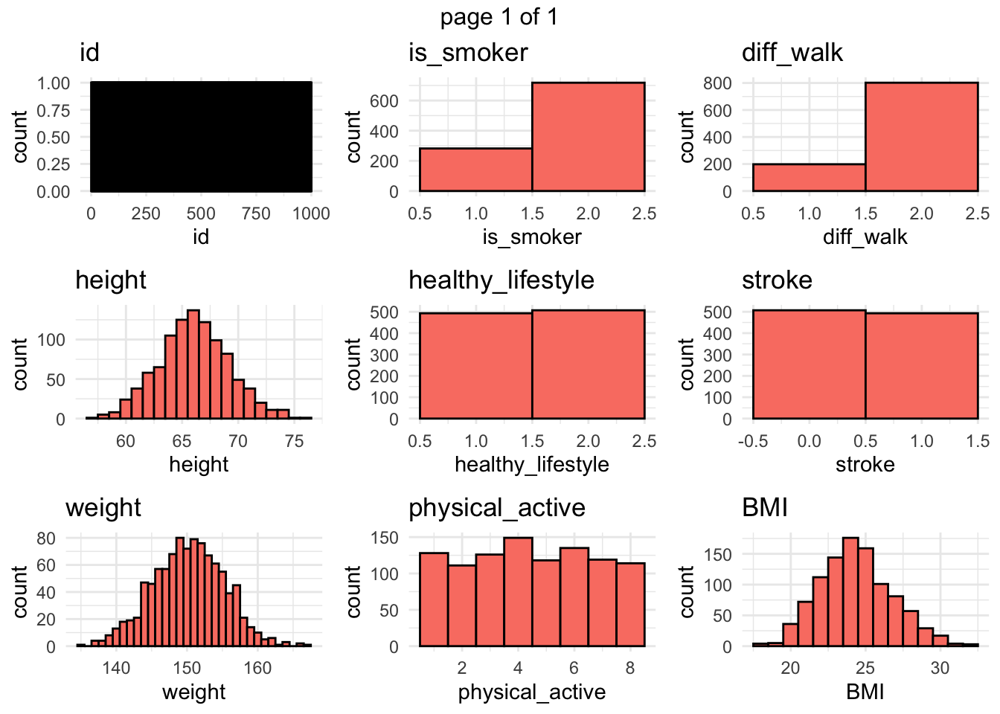
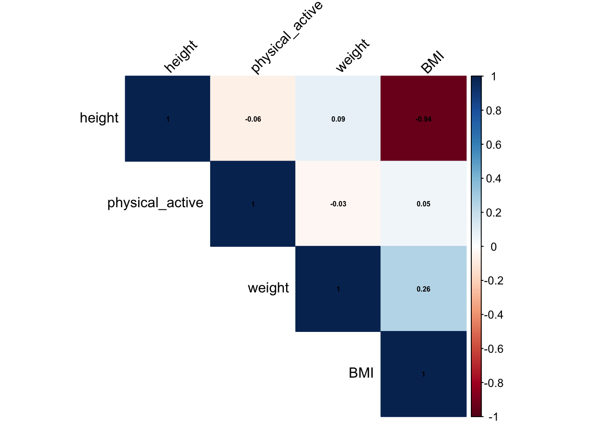
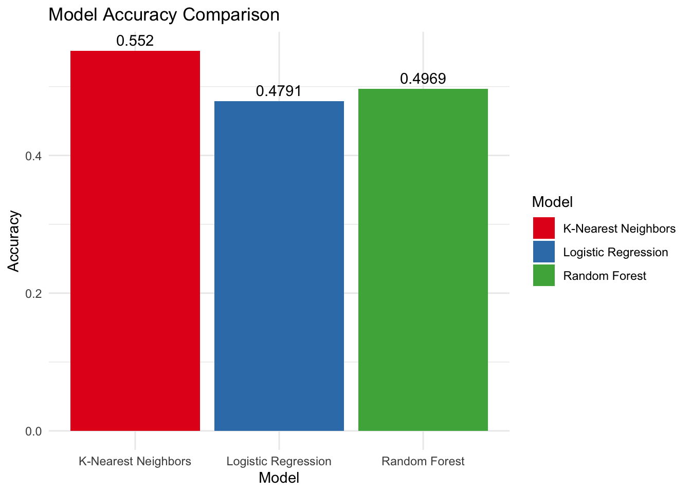

Warning: package 'simstudy' was built under R version 4.3.3
library(caret)
Loading required package: lattice
library(randomForest)
randomForest 4.7-1.1
Type rfNews() to see new features/changes/bug fixes.
Attaching package: 'randomForest'
The following object is masked from 'package:ggplot2':
margin
The following object is masked from 'package:gridExtra':
combine
library(class)
1.0.2 Generating synthetic dataset
I was not sure how many variables to generate for the synthetic dataset, so I only defined seven variables, 5 categorical, and 3 numerical. Here are the variables I generated:
Variable
Definition
Height
Normal Distribution, in pounds.
Weight
Normal Distribution, in inches
BMI
Generated using weight and height
is_smoker
30/70 split, Categorical (yes/no)
health_lifestyle
50/50 split, Categorical (yes/no)
physical_active
1 to 8 scale, Categorical
diff_walk
20/80 split, Categorical (yes/no)
stroke
Categorical (yes/no), 10% have strokes
#This chunk of code defines variables using the defData() function. The chunk defines height, weight, BMI, is_smoker, health_lifestyle, physical_active, diff_walk, and stroke. These variables will be used to generate a dataset with a 1000 observations.# Define the data structuredef <-defData(varname ="height", dist ="normal", formula =66, variance =10) # Height in inches, average 5'6"def <-defData(def, varname ="weight", dist ="normal", formula =150, variance =25) # Weight in poundsdef <-defData(def, varname ="is_smoker", dist ="categorical", formula ="0.3;0.7") # 30% smokers, 70% non-smokersdef <-defData(def, varname ="healthy_lifestyle", dist ="categorical", formula ="0.5;0.5") # 50% healthy, 50% notdef <-defData(def, varname ="physical_active", dist ="uniformInt", formula ="1;8") # Physical activity level, 1-8 scaledef <-defData(def, varname ="diff_walk", dist ="categorical", formula ="0.2;0.8") # 20% have difficulty walking, 80% don'tdef <-defData(def, varname ="stroke", dist ="binary", formula =0.5) # 50% have had a stroke - Doing this for a balanced dataset# Add the BMI variable which depends on height and weightdef <-defData(def, varname ="BMI", dist ="nonrandom", formula ="703 * weight / (height ^ 2)")# Generate the synthetic dataset.seed(123) # For reproducibilitysynth_data <-genData(1000, def) # Generate 1000 records
1.0.3 Summary of ‘synth_data’
# This chunk is used to display a summary of the synthetic dataset that was generated.synth_data <-as.data.frame(synth_data)summary(synth_data)
id height weight is_smoker
Min. : 1.0 Min. :57.11 Min. :134.8 Min. :1.000
1st Qu.: 250.8 1st Qu.:64.01 1st Qu.:146.7 1st Qu.:1.000
Median : 500.5 Median :66.03 Median :150.3 Median :2.000
Mean : 500.5 Mean :66.05 Mean :150.2 Mean :1.718
3rd Qu.: 750.2 3rd Qu.:68.10 3rd Qu.:153.8 3rd Qu.:2.000
Max. :1000.0 Max. :76.25 Max. :167.0 Max. :2.000
healthy_lifestyle physical_active diff_walk stroke
Min. :1.000 Min. :1.000 Min. :1.000 Min. :0.000
1st Qu.:1.000 1st Qu.:3.000 1st Qu.:2.000 1st Qu.:0.000
Median :2.000 Median :4.000 Median :2.000 Median :0.000
Mean :1.507 Mean :4.469 Mean :1.802 Mean :0.493
3rd Qu.:2.000 3rd Qu.:6.000 3rd Qu.:2.000 3rd Qu.:1.000
Max. :2.000 Max. :8.000 Max. :2.000 Max. :1.000
BMI
Min. :18.07
1st Qu.:22.69
Median :24.23
Mean :24.36
3rd Qu.:25.81
Max. :32.34
1.1 Exploratory Analysis
1.1.1 Distributions
# This chunk of code includes a function to compile all of the plots generated into one list so they could all be viewed together in one image.# Function to create histograms for each variablecreate_histograms <-function(data) { plots <-list()for (col_name innames(data)) {if (is.numeric(data[[col_name]])) { p <-ggplot(data, aes_string(x = col_name)) +geom_histogram(binwidth =1, fill ="salmon", color ="black") +labs(title = col_name) +theme_minimal() } else { p <-ggplot(data, aes_string(x = col_name)) +geom_bar(fill ="salmon", color ="black") +labs(title = col_name) +theme_minimal() } plots[[col_name]] <- p }return(plots)}# Create histograms for all variableshistograms <-create_histograms(synth_data)
Warning: `aes_string()` was deprecated in ggplot2 3.0.0.
ℹ Please use tidy evaluation idioms with `aes()`.
ℹ See also `vignette("ggplot2-in-packages")` for more information.
# Arrange the plots in a gridn <-length(histograms)nCol <-ceiling(sqrt(n))nRow <-ceiling(n / nCol)combined_plot <-marrangeGrob(grobs = histograms, nrow = nRow, ncol = nCol)combined_plot

Here we can see a distribution of all of our variables. One thing that can be noted is that the response variable (stroke) is evenly distributed which should help the results of our models.
1.1.2 Correlation Matrix
# Select only the numerical variables for the correlation matrixnumerical_vars <- synth_data[, c("height", "weight", "BMI", "physical_active")]# Calculate the correlation matrixcorrelation_matrix <-cor(numerical_vars)# Print the correlation matrixcorrplot(correlation_matrix, method ="color", type ="upper", order ="hclust",tl.col ="black", tl.srt =45, addCoef.col ="black", number.cex =0.5)

From the correlation matrix, we can see some correlation between BMI and height as well as BMI and weight. However this make sense as BMI is calculated using both height and weight. The correlation between the other variables looks very minimal.
1.1.3 Variable Importance
# Convert categorical variables to factorssynth_data$is_smoker <-factor(synth_data$is_smoker, labels =c("Yes", "No"))synth_data$healthy_lifestyle <-factor(synth_data$healthy_lifestyle, labels =c("Yes", "No"))synth_data$diff_walk <-factor(synth_data$diff_walk, labels =c("Yes", "No"))synth_data$stroke <-factor(synth_data$stroke, labels =c("Yes", "No"))synth_data$physical_active <-as.factor(synth_data$physical_active)# Fit an initial modelinitial_model <-glm(stroke ~ height + weight + BMI + is_smoker + healthy_lifestyle + physical_active + diff_walk, data = synth_data, family = binomial)# Perform stepwise selectionstepwise_model <-stepAIC(initial_model, direction ="both")
# Print the summary of the final modelsummary(stepwise_model)
Call:
glm(formula = stroke ~ 1, family = binomial, data = synth_data)
Coefficients:
Estimate Std. Error z value Pr(>|z|)
(Intercept) -0.02800 0.06325 -0.443 0.658
(Dispersion parameter for binomial family taken to be 1)
Null deviance: 1386.1 on 999 degrees of freedom
Residual deviance: 1386.1 on 999 degrees of freedom
AIC: 1388.1
Number of Fisher Scoring iterations: 3
In this synthetic dataset, it looks as if healthy_lifestyle has the strongest correlation with the response variable (stoke). This was discovered using stepwise selection model going in both directions. Although healthy_lifestyle does not have a statistically significant p-value we can not conclude that there is a statistical significant relationship between this feature and the response variable. Even though this is the case, we will keep this variable in mind when modeling.
1.2 Statistical Analysis
For the statistical analysis, we will first setup the training control, then we will train logistic regression, random forest, and KNN models.
# Define the training controltrain_control <-trainControl(method ="cv", number =5) # 10-fold cross-validation
Random Forest
1000 samples
7 predictor
2 classes: 'Yes', 'No'
No pre-processing
Resampling: Cross-Validated (5 fold)
Summary of sample sizes: 800, 799, 800, 800, 801
Resampling results across tuning parameters:
mtry Accuracy Kappa
2 0.4920649 -0.017776906
7 0.4929848 -0.014797849
13 0.4969348 -0.006716948
Accuracy was used to select the optimal model using the largest value.
The final value used for the model was mtry = 13.
The random forest model achieved an accuracy of 51.29%, this is pretty similar to the logistic regression model, not much improvement has occurred.
1.2.3 KNN
# K-Nearest Neighborsknn_model <-train(stroke ~ height + weight + BMI + is_smoker + healthy_lifestyle + physical_active + diff_walk,data = synth_data, method ="knn", trControl = train_control,tuneLength =10) # can change to try different k values
1.2.3.1 Results
print(knn_model)
k-Nearest Neighbors
1000 samples
7 predictor
2 classes: 'Yes', 'No'
No pre-processing
Resampling: Cross-Validated (5 fold)
Summary of sample sizes: 801, 800, 800, 800, 799
Resampling results across tuning parameters:
k Accuracy Kappa
5 0.5319606 0.06294648
7 0.5180006 0.03427891
9 0.5269805 0.05280882
11 0.5289604 0.05677899
13 0.5349603 0.06900349
15 0.5289403 0.05660205
17 0.5349953 0.06914110
19 0.5520256 0.10327857
21 0.5379905 0.07520355
23 0.5440306 0.08704269
Accuracy was used to select the optimal model using the largest value.
The final value used for the model was k = 19.
We can see from the results of the KNN model that this method achieved an accuracy of 53.19%, with the best K value being 5. This is not much of an improvement to the previous model.
1.3 Analysis Results
# This chunk gets max accuracy from each model, builds a data frame of the accuracies, and then creates a bar plot. The bar plot will display the three models and include a label of the accuracy.# Extract accuracy from the modelslog_accuracy <-max(log_model$results$Accuracy)rf_accuracy <-max(rf_model$results$Accuracy)knn_accuracy <-max(knn_model$results$Accuracy)# Create a data frame for the accuraciesaccuracy_df <-data.frame(Model =c("Logistic Regression", "Random Forest", "K-Nearest Neighbors"),Accuracy =c(log_accuracy, rf_accuracy, knn_accuracy))# Plot the accuracies using ggplot2ggplot(accuracy_df, aes(x = Model, y = Accuracy, fill = Model)) +geom_bar(stat ="identity") +theme_minimal() +geom_text(aes(label =round(Accuracy, 4)), vjust =-0.5) +labs(title ="Model Accuracy Comparison",x ="Model",y ="Accuracy") +scale_fill_brewer(palette ="Set1")

From the results we can see that KNN performed the best overall, however its accuracy is only 53.2%, meaning this is only slightly better than random chance. This could be due to the fact that there are not very many predictors in that data or the fact that all this data is generated synthetically. All the predictors displayed a normal distribution so it could be possible that the data is too normal and doesn’t display much variance. Here are some ways to maybe improve the data to get better results (however, altering the data generation to improve results kinda defeats the purpose of statistical analysis as you are artificially guiding the narrative by creating the data solely to improve results):